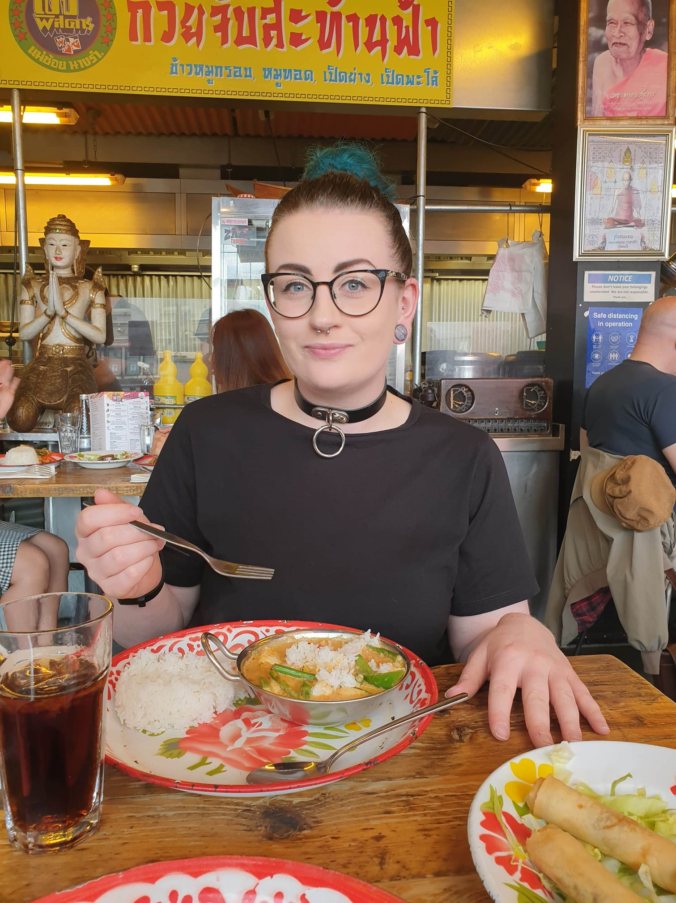

Alicia Boote

Summary
I am a full time nurse at an NHS Teaching Hospital at a busy Critical Care Department
Currently i am learning code, going back to a past-time i enjoyed as a teenager and am an aspiring freelance web developer. I am a motivated self-starter, excellent communicator and creative. I anticipate to be a full stack web developer by the end of 2023.
Skills
Technical Skills
- HTML5, CSS3 and JavaScript
- Adoebe Photoshop
- Microsoft Office
Personal Skills
- Excellent Communicator both verbally and non-verbally
- Motivated and a strong self-starter
- A keen interest and willing to learn new skills
- Strong interpersonal skills, empathetic, caring and compassionate
- Confidence to get the job done and willingness to work outside my comfort zone
Previous Employment
Staff Nurse - Department of Critical Care
Doncaster and Bassetlaw Teaching Hospitals
- Assess, plan, implement and evaluate care for level 2 and level 3 patients.
- Manage patients that are sedated and venilated via endo-tracheal tubes and tracheostomies
- Manage and care for patients with invasive lines such as arterial lines, central lines and VasCaths
- Safely run and manage patients on continuous veno-venous haemodialysis
- Assist patients with completing their activities of daily living
Staff Nurse - Acute Medical Unit
The Rotherham NHS Foundation Trust
- Assess, plan, implement and evaluate care for acutely patients newly admitted from Urgent and Emergency Care Centre.
- Manage and care for patients with conditions such as exacerbations of COPD, heart failure, alcoholic and non-alcoholic liver disease, overdoses, myocardial infarctions and infections such as pneumonia and sepsis management
- Administering medication via various routes such as intravenous, orally, subcutaneously, rectally and sublingually
- Assist patients with completing their activities of daily living
Shift Manager
McDonalds Restaurants
- Manage a team of crew members n the shop floor, ensuring correct people placement, stock and completing checklists to ensure shift is ready for a profitable efficient day
- Cash duties, cashing up, depositing cash into safe and working with money delivery to ensure enough change in tills
- Managing staff and any disciplinaries that are necassary
- Inventory management and ensuring food safety standards are upheld with equipment checks
- Managing deliveries and stock to ensure enough products
Education
DBTH and TRFT
Various certifications and competencies
- Peripheral Cannulation
- Urethral Catheterisation
- ALERT course
- SEPSIS course
- Intermediate Life Support
- Moving and Handling
- Mentorship Preperation for Healthcare Professionals
- CVVHD course
- Central line and Arterial line care
- IV medication administration
- Zone leader study day
Sheffield Hallam University
BSc Adult Nursing
3 year degree as a Student Nurse. 50% lectures/seminars and 50% practical placements. I learned all the skills to become a Registered Nurse with Adults.
Rotherham College
Access to Higher Education Science
1 year access course learning theory of Chemistry and Biology to enable me to apply for my BSc Adult Nursing
Contact Me
My Hobbies